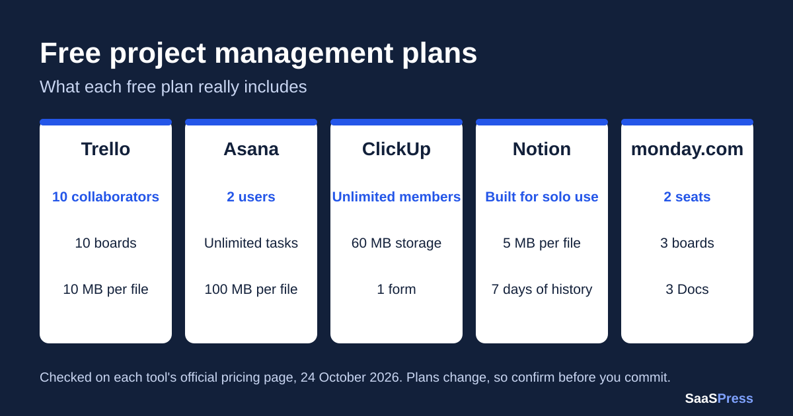

Freelancers sell their time, so a project management tool has to earn its place. The good news is that five of the best-known tools have a free plan. The catch is that each free plan stops you in a different place: the number of people, the number of boards, the size of a file, or the features you can use.
This guide shows what each free plan includes and where it runs out, so you can pick the one that fits the way you work before you build your projects inside it.

Quick comparison of the free plans
| Tool | Who the free plan is for | Main limit to know about |
|---|---|---|
| Trello | Simple boards, solo work or a small group | 10 boards per Workspace, 10 MB per file |
| Asana (Personal plan) | One or two people | Only 2 users |
| ClickUp (Free Forever) | Solo freelancers who work with clients | 60 MB of storage in total |
| Notion (Free) | One person organising personal projects | 5 MB per file, limited pages with 2 or more members |
| monday.com (Free) | Two people with very small setups | 3 boards and 3 Docs |
1. Trello
Trello is built around boards, lists and cards, which makes it the quickest to learn.
What the free plan includes
- Free for up to 10 collaborators per Workspace
- Unlimited cards
- Up to 10 boards per Workspace
- Unlimited Power-Ups per board
- 10 MB per file
- 250 Workspace command runs per month for built-in automation
- Assignee and due dates, mobile apps and two-factor authentication
What you need a paid plan for: unlimited boards, card mirroring, custom fields and advanced checklists come with Standard. Calendar, Timeline, Table, Dashboard and Map views come with Premium.
Best for: freelancers who want a simple visual board and may add a client or two.
Trello’s official pricing page
2. Asana (Personal plan)
Asana calls its free plan Personal. It is aimed at one or two people.
What the free plan includes
- 2 users
- Unlimited tasks and projects
- List, board and calendar views
- Unlimited storage, with up to 100 MB per file
- Status updates, time tracking through integrations and more than 100 free integrations
What you need a paid plan for: Timeline and Gantt views, reporting dashboards, unlimited automations, forms, custom fields and unlimited free guests are listed under the Starter plan, not Personal.
Best for: a freelancer working alone, or with one partner, who wants a polished task list. The 2-user limit means you cannot invite a client as a regular user on the free plan.
3. ClickUp (Free Forever)
ClickUp packs many features into its free plan, but its storage limit surprises people.
What the free plan includes
- Unlimited tasks and subtasks
- Unlimited free members
- Kanban boards and calendar view
- Collaborative Docs, sprint management and time tracking
- 1 form
- 60 MB of storage
- Two-factor authentication and 24/7 support
What you need a paid plan for: custom fields, unlimited storage and spaces, unlimited forms, unlimited Gantt charts, 1,000 automations per month, goals and guest permissions are listed under the Core plan.
Best for: freelancers who want to bring clients or helpers into the same workspace without paying per person. Keep an eye on the 60 MB storage if you share large files.
ClickUp’s official pricing page
4. Notion (Free)
Notion combines notes, documents and databases, so you can run tasks and keep your writing in one place.
What the free plan includes
- Designed for individuals organising personal projects
- Unlimited pages and blocks for individuals, but limited once there are 2 or more members
- Uploaded files up to 5 MB
- 7 days of page history
- Basic forms, basic sites and Notion Calendar
- Databases with subtasks, dependencies and custom properties
- A trial of Notion AI
What you need a paid plan for: custom forms, custom sites, charts, collaborative blocks and unlimited file uploads are listed under the Plus plan.
Best for: solo freelancers who like to keep notes, briefs and a task database together. Because the free plan is limited when more people join, it suits work you do on your own.
Notion’s official pricing page
5. monday.com (Free)
monday.com is known for its colourful boards. Its free plan is small, but it lets you test the tool.
What the free plan includes
- Up to 2 seats
- Up to 3 boards
- Up to 3 Docs
- More than 200 templates and 8 column types
- iOS and Android apps
What you need a paid plan for: automations, integrations, Timeline and Gantt views, calendar view and guest access are listed from the Standard plan. Unlimited items and unlimited free viewers start from the Basic plan.
Best for: a freelancer with only a few active projects who wants to try the monday.com style. With 3 boards, you will outgrow it quickly.
monday.com’s official pricing page
Which free plan should you choose?
- You work alone and want the simplest setup: start with Trello.
- You want to include clients or helpers for free: look at ClickUp, which lists unlimited free members, or Trello, which allows up to 10 collaborators per Workspace.
- You want notes and tasks together, just for yourself: try Notion.
- You work with one partner and want a clean task list: Asana’s Personal plan covers 2 users.
- You only have two or three active projects: monday.com’s free plan can be enough to test the idea.
Check the limits yourself before you build
Before you move real client work into any tool, open its official pricing page and look at the free plan’s limits for people, boards or projects, file size and storage. Then ask one question: what happens to my work when I hit the limit? Making that check in the first week avoids an awkward move later.
Want help choosing? Try the SaaSPress Tool Finder, which suggests tools based on the work you need to get done.
This guide covers free-plan limits only and does not include prices. Always confirm current details on each tool’s official site.